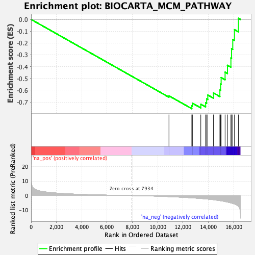

| | | Dataset | DE_genes2 |
| Phenotype | NoPhenotypeAvailable |
| Upregulated in class | na_neg |
| GeneSet | BIOCARTA_MCM_PATHWAY |
| Enrichment Score (ES) | -0.7565774 |
| Normalized Enrichment Score (NES) | -1.8170311 |
| Nominal p-value | 0.0 |
| FDR q-value | 0.016072804 |
| FWER p-Value | 0.044 |
Table: GSEA Results Summary

Fig 1: Enrichment plot: BIOCARTA_MCM_PATHWAY
Profile of the Running ES Score & Positions of GeneSet Members on the Rank Ordered List
| PROBE | GENE SYMBOL | GENE_TITLE | RANK IN GENE LIST | RANK METRIC SCORE | RUNNING ES | CORE ENRICHMENT | | 1 | CDK2 | | | 10886 | -0.760 | -0.6474 | No |
| 2 | CCNE1 | | | 12690 | -1.585 | -0.7320 | Yes |
| 3 | CDKN1B | | | 12737 | -1.607 | -0.7098 | Yes |
| 4 | CDT1 | | | 13400 | -2.026 | -0.7185 | Yes |
| 5 | MCM3 | | | 13783 | -2.315 | -0.7057 | Yes |
| 6 | MCM5 | | | 13861 | -2.378 | -0.6734 | Yes |
| 7 | MCM7 | | | 13952 | -2.457 | -0.6407 | Yes |
| 8 | ORC5 | | | 14402 | -2.879 | -0.6233 | Yes |
| 9 | MCM4 | | | 14906 | -3.510 | -0.5992 | Yes |
| 10 | ORC3 | | | 14965 | -3.594 | -0.5470 | Yes |
| 11 | MCM2 | | | 15006 | -3.658 | -0.4926 | Yes |
| 12 | ORC4 | | | 15318 | -4.149 | -0.4471 | Yes |
| 13 | KITLG | | | 15505 | -4.490 | -0.3887 | Yes |
| 14 | ORC1 | | | 15778 | -5.075 | -0.3264 | Yes |
| 15 | MCM6 | | | 15829 | -5.218 | -0.2484 | Yes |
| 16 | ORC6 | | | 15923 | -5.453 | -0.1694 | Yes |
| 17 | ORC2 | | | 16058 | -5.843 | -0.0869 | Yes |
| 18 | CDC6 | | | 16375 | -7.439 | 0.0094 | Yes |
Table: GSEA details [plain text format]
Fig 2: BIOCARTA_MCM_PATHWAY: Random ES distribution
Gene set null distribution of ES for BIOCARTA_MCM_PATHWAY